ポーズスタジオ 使用手引書
- 版: 0.1.0
- 日付: 2026-10-28
Unity に不慣れな方でも、お使いいただけます。
この手引書で、できるようになること
- ポーズスタジオを、Unity に入れる。
- アバターに、ポーズを付ける。
- 手の形や表情を、整える。
- できたポーズを、写真に撮る。
目次
やりたいことから探す
- できあいのポーズを当てたい
- 手足を引っぱって、ポーズを直したい
- 関節を少しずつ回して、細かく直したい
- 指や手の形を変えたい
- 表情を付けたい
- 髪やスカートの形を整えたい
- ポーズを保存して、あとで使いたい
- きれいな写真を撮りたい
- 動画や GIF にしたい
- VRChat の中で、ポーズを使いたい
うまくいかないときは、困ったときを見てください。
知らない言葉が出たら、言葉の一覧を見てください。
はじめに
ポーズスタジオでできること
ポーズスタジオは、Unity の中で、人型のアバターにポーズを付ける道具です。
できたポーズは、そのまま写真や動画に撮れます。

ポーズスタジオで、ポーズを付けて撮った写真です。
- ポーズの絵をクリックするだけで、アバターにポーズが付きます。
- 手や足の印を引っぱると、うでや足がついてきます。
- プレイモード（Unity でゲームを動かす状態）に、入らなくても使えます。
- 保存したポーズは、ほかのアバターにも使えます。
安心して試せます
- まちがえても、窓の上の［↶］で 1 つ前に戻せます。窓かシーンビューを触っているときは、Ctrl+Z でも戻せます。かんたん表示の［からだを動かす］では、［元に戻す］を押します。
- マイポーズの［消す］だけは、戻せません。
- ポーズを付けたり撮ったりしても、アバターに、ポーズスタジオの部品は付きません。アップロードのじゃまをしません。VRChat 用の仕掛けを入れたときだけ、アバターに物や設定が入ります（「VRChat で使う」）。
- アバターの元のファイル（モデルやプレハブ）は、書きかえません。
- ポーズを同じ名前で保存すると、名前のあとに番号が付きます。前のポーズは上書きされません。［くわしい保存］では、上書きする前にたしかめる画面が出ます。
必要なもの
- Unity 2022.3。VRChat 用のアバターなら、VRChat が決めた版（2022.3.22f1）をおすすめします。
- 人型（Humanoid）として設定された、アバターのモデル。
- VRChat SDK は、なくても使えます。あると、VRChat 用の機能が増えます。
- ポーズスタジオは、BOOTH の商品ページで手に入ります。
手順の数
入れ方は 6 手順、はじめての練習は 10 手順です。
先に知っておく言葉
- シーンビュー: Unity の真ん中にある、アバターを見る画面です。
- ヒエラルキー: Unity の左にある、置いてある物の一覧です。
- プロジェクトウィンドウ: Unity の下にある、ファイルの一覧です。
- 人型（Humanoid）: 頭・うで・足の骨を、Unity が見分けられるアバターです。
- 印（ハンドル）: シーンビューに出る、引っぱるための四角や丸です。
画像の見方
赤い枠と数字は、押す場所か、見て確かめる場所です。数字は、下の手順の番号と同じです。画像に無い番号の手順は、前の画像と同じ場所を押します。
苦手なこと
ポーズスタジオにも、苦手なことがあります。買う前に、ここでたしかめてください。
使えるアバター
- 人型（Humanoid）でないモデルには、ポーズを付けられません。動物の形などで、人型の設定ができないものは使えません。
動き・揺れ
- ポーズは、止まった形を作る道具です。歩くなどの動きを、1 から作る道具ではありません。ポーズとポーズの間を、なめらかにつなぐ動画は作れます。
- 髪やスカートの揺れは、止まった形として整えます。PhysBone の揺れを見るには、VRChat SDK（3.10.5 以降）が要ります。
VRChat の中
- カメラのほうを見るポーズは、VRChat の中では作れません。VRChat SDK が入っているプロジェクトでは、ポーズに入れた目の向きで止めることはできます。
- 明るさや画面の効果を、VRChat の中で変える機能はありません。写真のときは、Unity の中の撮影の設定を使ってください。
書き出し
- 動画を MP4 で書き出すには、ffmpeg（動画を作る無料のソフト）が要ります。なくても、GIF と PNG で書き出せます。
確かめた環境
- Windows 11、Unity 2022.3.22f1。
- Linux（Ubuntu 22.04）、Unity 2022.3.22f1。
- ほかの環境では、まだ確かめていません。
入れ方
ツールを手に入れます
BOOTH の商品ページで「ポーズスタジオ」を買い、ZIP ファイルをダウンロードします。
ダウンロードした ZIP ファイルを解凍します（Windows では右クリックの「すべて展開」、Mac ではダブルクリック）。中に
PoseStudio.unitypackageがあることを、たしかめます。
Unity に入れます
先に、アバターが入っている Unity のプロジェクトを、Unity Hub から開いておきます。Unity の版は、Unity Hub のプロジェクトの一覧に出ます。2022.3 で始まる版なら使えます。
PoseStudio.unitypackageをダブルクリックします。Unity の上のメニューから、［Assets > Import Package > Custom Package...］を選んでも同じです。
取り込む物の一覧の窓が出ます。上に「PoseStudio」と出ます。すべてに印が付いたまま、右下の［Import］を押します。

読み込みが終わるまで、待ちます。取り込みの窓と、進み具合の表示が消えたら終わりです。
入ったことを、たしかめます
このパソコンで初めて入れたときは、ポーズスタジオの窓が自動で開きます。
開かないときは、Unity の上のメニューから［Tools > Pose Studio > Open］を選びます。
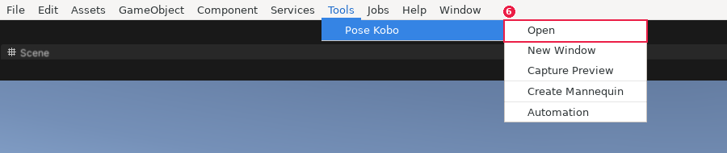
窓が開けば、入っています。メニューが出ない・赤いエラーが出るときは、困ったときを見てください。
新しい版を入れるとき
新しい版の PoseStudio.unitypackage を、上と同じ手順で入れます。
古い版を消す必要はありません。保存したポーズも残ります。
入れたあとにエラーが出たときは、プロジェクトウィンドウの「Packages」の中の「Pose Studio」を消してから、入れ直します。取り込みの窓では、同じ物が「com.」で始まる名前で出ます。
はじめての練習
アバターにポーズを付けて、写真を 1 枚撮ります。
練習なので、どのアバターでも大丈夫です。アバターがないときは、練習用のマネキン（人の形の人形）を出せます。
アバターを入れます
ヒエラルキーで、ポーズを付けるアバターをクリックします。アバターがヒエラルキーに無いときは、プロジェクトウィンドウからアバターのプレハブを、ヒエラルキーへドラッグして置きます。
Unity の上のメニューから、［Tools > Pose Studio > Open］を選びます。
窓が開き、アバターが自動で入ります。シーンビューに、アバターの全身が映ります。
アバターがいないときは、窓の［試し用のマネキンを出す］を押します。

ポーズを付けます
窓の［ポーズをえらぶ］を押します。
ポーズの絵の中から、「手を振る」をクリックします。アバターが、手を振るポーズになります。

手を動かします
窓の［からだを動かす］を押します。シーンビューの手と足に、緑の四角が出ます。
右手の緑の四角を、上へ少しドラッグします。アバターがこちらを向いているときは、画面の左側の手が右手です。うでが、ついてきます。

［元に戻す］を押します。手が、動かす前に戻ります。Ctrl+Z でも戻せます。

写真を撮ります
窓の［写真］を押します。
［写真を撮る］を押します。シーンビューの向きで撮れます。写るのはアバターだけで、緑の印や床は写りません。
［保存先を開く］を押すと、撮った写真のフォルダが開きます。

写真は、プロジェクトのフォルダの中の Screenshots/PoseStudio に保存されます。
できあがりの例です。背景の色は、場面や設定で変わります。
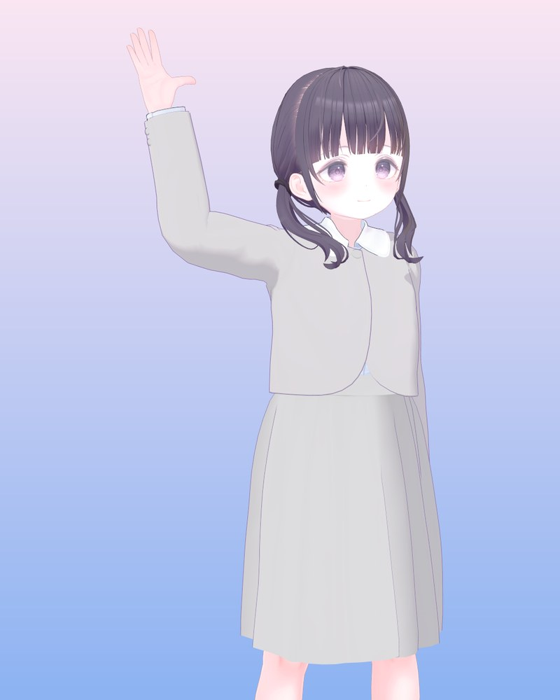
うまくいかないときは、困ったときを見てください。
できあいのポーズ
できあいのポーズを当てたい
できあいのポーズは、ポーズスタジオに入っているポーズです。
［ライブラリ］タブで、絵の一覧から選ぶと、アバターにそのポーズが付きます。
先に、窓を開いてアバターを入れておきます。やり方は「はじめての練習」の手順 1 と 2 です。
かんたん表示で当てるときは、［ポーズをえらぶ］タブを使います。「はじめての練習」の手順 3 と 4 と同じです。
ポーズを当てます
窓の左上の［くわしく］を押します。
［ライブラリ］タブを押します。
一覧の上の［ポーズ］を押します。すでに選ばれているときは、そのままで大丈夫です。
好きなポーズの絵をクリックします。アバターに、そのポーズが付きます。
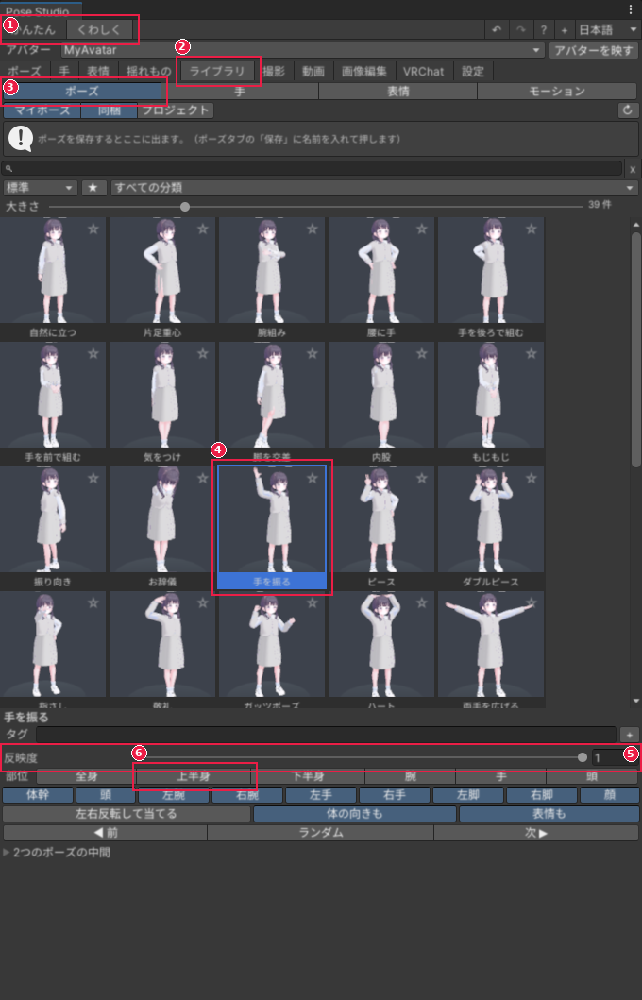
一部だけ、少しだけ当てます
［反映度］のスライダーを動かします。
1 だと、ポーズが全部入れかわります。0.5 だと、今のポーズと半分ずつ混ざります。
部位の［上半身］を押します。
上半身だけが変わり、脚は今のままです。
もう一度、ポーズの絵をクリックします。
［反映度］と部位は、絵をクリックしたときに使われます。
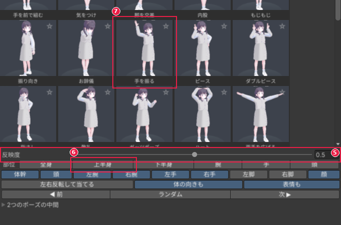
できあがり
絵を押すたびに、ポーズが変わります。気に入らないときは、窓の上の［↶］を押します（Ctrl+Z でも戻せます）。
自分で保存したポーズは、［マイポーズ］に出ます。保存のしかたは、ポーズの保存の章を見てください。
気をつけること
手足を引っぱる
手足を引っぱって、ポーズを直したい
シーンビューに出る緑の印を、マウスで引っぱります。手や足を引っぱると、うでや脚がついてきます。
印は、手・足・ひじ・ひざ・頭・腰・胸にあります。
先に、窓を開いてアバターを入れておきます。やり方は「はじめての練習」の手順 1 と 2 です。
かんたん表示の［からだを動かす］タブでも、手足を引っぱれます。［左右対称］などは、［くわしく］で使います。
手を動かします
窓の左上の［くわしく］を押します。
［ポーズ］タブを押します。
［手足を引っぱる］を押します。シーンビューの手と足に、緑の四角が出ます。
右手の緑の四角に、マウスを乗せます。名前と動かし方が出ます。
緑の四角を、動かしたい方へドラッグします。うで全体がついてきます。
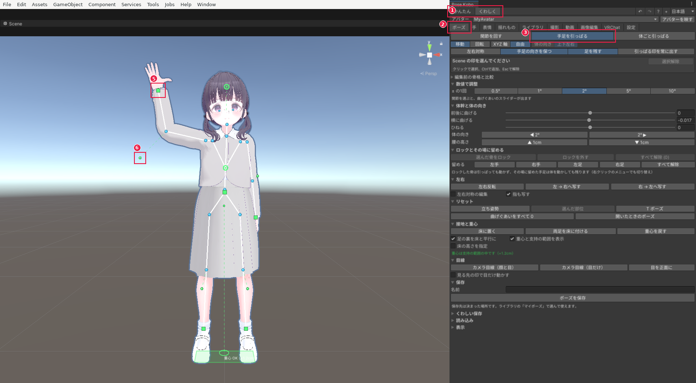
ひじやひざの向きを変えます
右ひじの、緑の小さな丸をドラッグします。
手の位置はそのままで、ひじの向きが変わります。ひざも同じです。
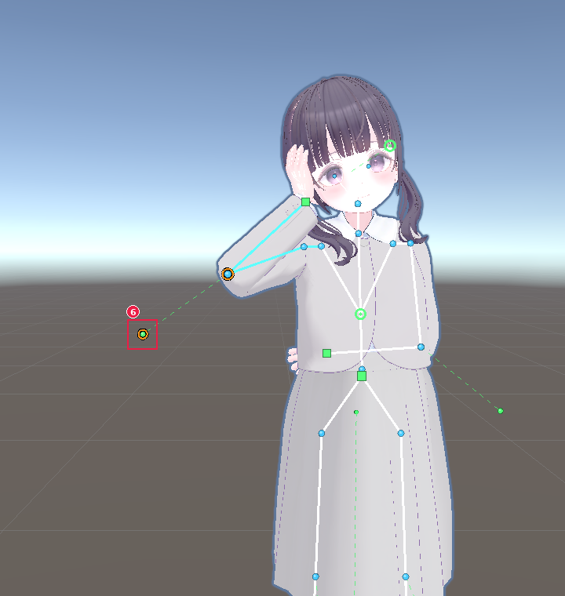
ほかの印
- 足の四角: 脚ごと動かします。
- 腰の四角: 足を残して、体を動かします。しゃがんだり、寄せたりできます。
- 胸の印: 上半身を曲げます。
- 頭の印: 顔と目を、その方へ向けます。
左右そろえたいときは、先に［左右対称］を押します。片側を動かすと、反対側も鏡のように動きます。
手や足の向きを変えるときは、［回転］を押してから、手や足の印をクリックします。回すための輪が出ます。
できあがり
手を上げたり、足を開いたりしたポーズになります。戻すときは、窓の上の［↶］を押します（Ctrl+Z でも戻せます）。
気をつけること
- うでや脚の長さより遠くには、手や足が届きません。
- 動かしたくない手足は、印を右クリックして、［ロック（引っぱっても動かさない）］を選びます。
- その位置に残したい手足は、［その場に留める（位置を固定）］を選びます。
- どの関節でもつかんで引っぱりたいときは、［体ごと引っぱる］を使います。
- 少しずつ回したいときは、関節を回す章を見てください。
関節を回す
関節を少しずつ回して、細かく直したい
関節は、ひじやひざのように、体が曲がる所です。
関節を 1 つ選ぶと、回すための輪が出ます。［+］と［−］で、決めた角度ずつ動かすこともできます。
先に、窓を開いてアバターを入れておきます。やり方は「はじめての練習」の手順 1 と 2 です。
輪で回します
窓の左上の［くわしく］を押します。
［ポーズ］タブを押します。
［関節を回す］を押します。シーンビューに、関節の丸い印が出ます。
回したい関節の印を、クリックします。右ひじを選ぶと、ひじに輪が出ます。
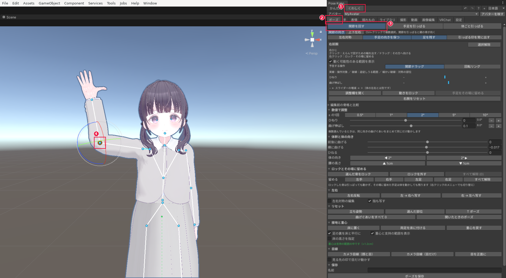
輪をドラッグします。ひじが回ります。
関節の印をドラッグすると、その関節の親の骨が、そちらを向きます。ひじなら、上うでが向きます。
数字で調整します
窓の［数値で調整］の見出しを押します。欄が開きます。すでに開いているときは、押さなくてかまいません。
［± の1回］の横で、［1°］を押します。
［曲げ伸ばし］の行の［+］を押します。右ひじの［曲げ伸ばし］の角度が、1° 変わります。押し続けると、続けて動きます。
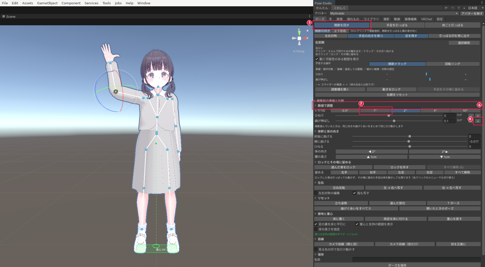
スライダーを、直接ドラッグしてもかまいません。スライダーの名前は、関節ごとに変わります。ひじなら、［曲げ伸ばし］と［ひねり］です。
できあがり
関節が少しずつ回り、ポーズが細かく直ります。戻すときは、窓の上の［↶］を押します（Ctrl+Z でも戻せます）。
気をつけること
- Ctrl+クリックで、関節を 2 つ以上選べます。同じ向きの曲がりが、同じだけ動きます。
- 輪の向きが分かりにくいときは、［関節の向き］と［上下左右］で切り替えます。
- 腰は、［体幹と体の向き］で動かします。
- 指は、［手］タブで動かします。手の形の章を見てください。
- スライダーの数は、角度ではなく、−1 から 1 の値です。角度は、スライダーの右に出ます。
- スライダーの端より先には、動きません。
手の形
指や手の形を変えたい
手の形は、［手］タブで変えます。5 本の指をまとめて握ったり、指を 1 本ずつ曲げたりできます。
先に、窓を開いてアバターを入れておきます。やり方は「はじめての練習」の手順 1 と 2 です。
ピースやグーのような、できあいの形もあります。それは、この章の終わりに書きました。
5 本の指をまとめて動かします
窓の左上の［くわしく］を押します。
［手］タブを押します。左手と右手の欄が出ます。
動かしたい手の［握り］のスライダーを、右へ動かします。5 本の指が、握る形になります。
同じ欄の［開き］のスライダーを動かします。指と指の間が、広がったり閉じたりします。
［親指の向き］の四角の中を、ドラッグします。横で親指の開き、縦で付け根の曲げが決まります。
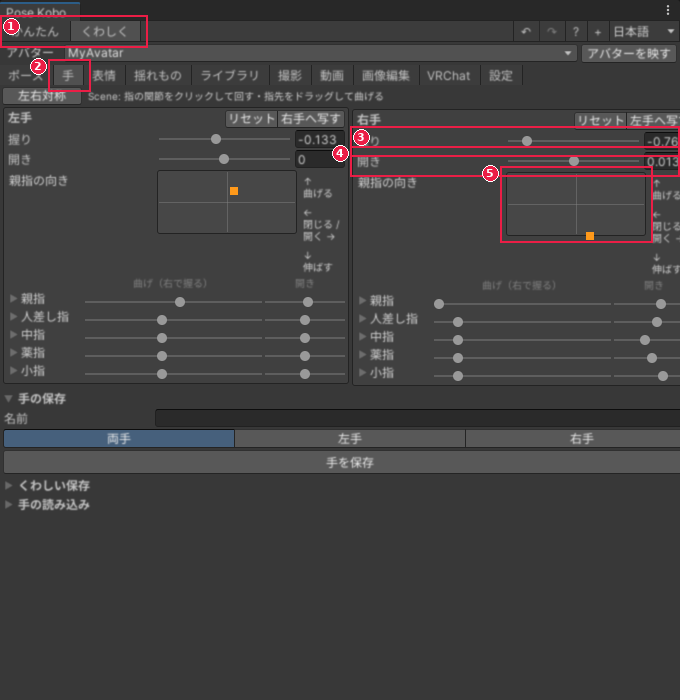
窓がせまいときは、先に［両手］、［左手］、［右手］のどれかを押して、出す手を決めます。
指を 1 本ずつ動かします
指の名前の横にある、左のスライダーを動かします。その指が、曲がったり伸びたりします。
その右のスライダーを動かします。その指が、横に開いたり閉じたりします。
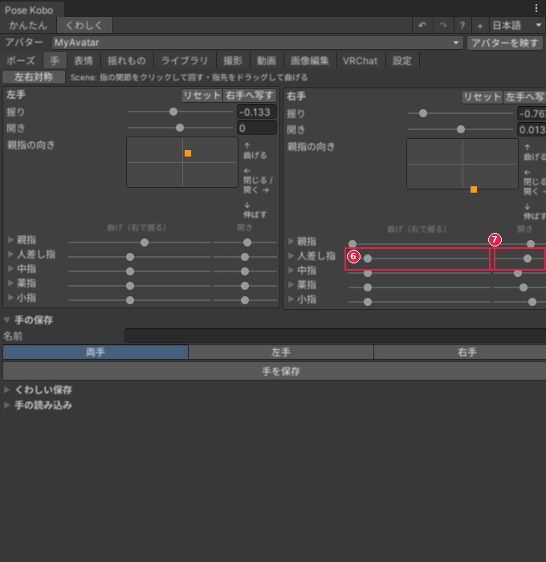
指の名前（例: ［人差し指］）を押します。関節ごとの調整が開きます。
シーンビューで動かします
指先の緑の丸を、ドラッグします。指が曲がったり、伸びたりします。
指の関節の丸をクリックすると、回すための輪が出ます。
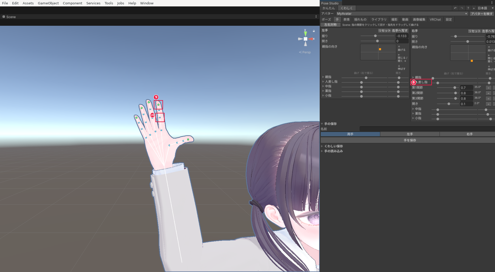
丸が小さいときは、シーンビューを拡大します。全身に戻すときは、［アバターを映す］を押します。
できあいの形、左右、保存
- できあいの形は、［ライブラリ］タブの［手］で選びます。かんたん表示では、［ポーズをえらぶ］タブの［手のサイン］です。
- 左手の欄の［右手へ写す］を押すと、左手の形が、右手に鏡のように写ります。右手の欄には、［左手へ写す］があります。
- ［リセット］を押すと、その手の指が、曲げ・開きのない標準の形に戻ります。
- ［手の保存］に名前を入れて［手を保存］を押すと、今の手の形が残ります。［ライブラリ］の［マイハンド］に出ます。
できあがり
握った手や、指をさす手ができます。戻すときは、窓の上の［↶］を押します（Ctrl+Z でも戻せます）。
気をつけること
- ［左右対称］が押されていると、片手を動かしたとき、反対の手も同じになります。
- 左右を別々にしたいときは、［左右対称］をもう一度押して、外します。
- 手の形を付けても、腕や体の形は変わりません。
表情
表情を付けたい
表情は、ボタンを 1 つ押すだけで付きます。この章は、かんたん表示を使います。
表情は、顔の動き（シェイプキー）の組み合わせです。アバターの顔に、笑顔や、ウィンクの形が付きます。
先に、窓を開いてアバターを入れておきます。やり方は「はじめての練習」の手順 1 と 2 です。
ボタンで付けます
窓の左上の［かんたん］を押します。
［表情］タブを押します。「基本」「ネガティブ」「驚き」「口の形」「目」の順に、ボタンが並びます。
付けたい表情のボタンを押します。例えば、「基本」の［笑顔］です。アバターの顔が、笑顔になります。
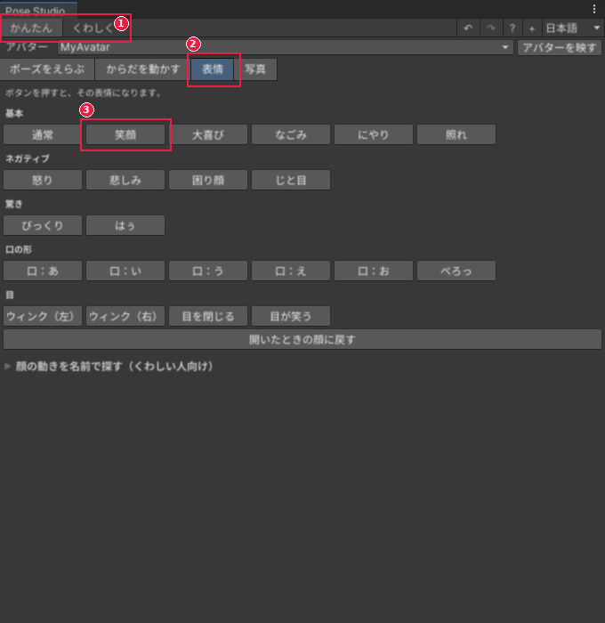
別のボタンを押します。前の表情のボタンで動かした顔の動きが戻って、新しい表情に変わります。
はじめの顔に戻すときは、［開いたときの顔に戻す］を押します。
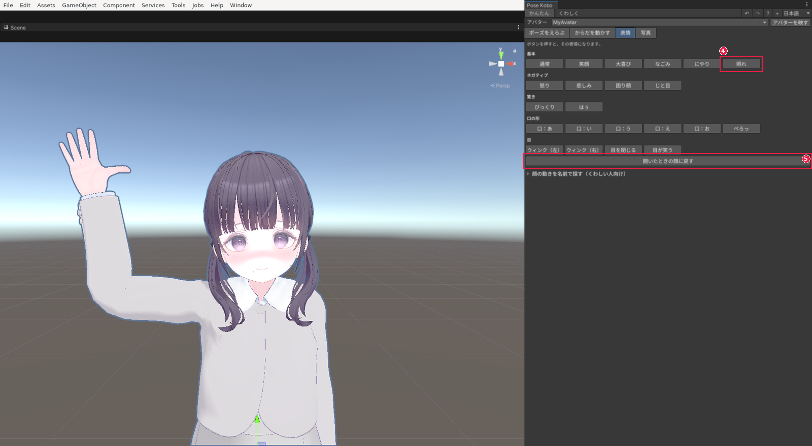
顔の動きを 1 つずつ調べます
［顔の動きを名前で探す（くわしい人向け）］の見出しを押します。欄が開きます。
［名前］の欄に、探したい言葉を入れます。例えば、「笑」や smile です。名前は、アバターによって違います。
出てきたスライダーを動かします。0 で動かさず、100 で最大です。
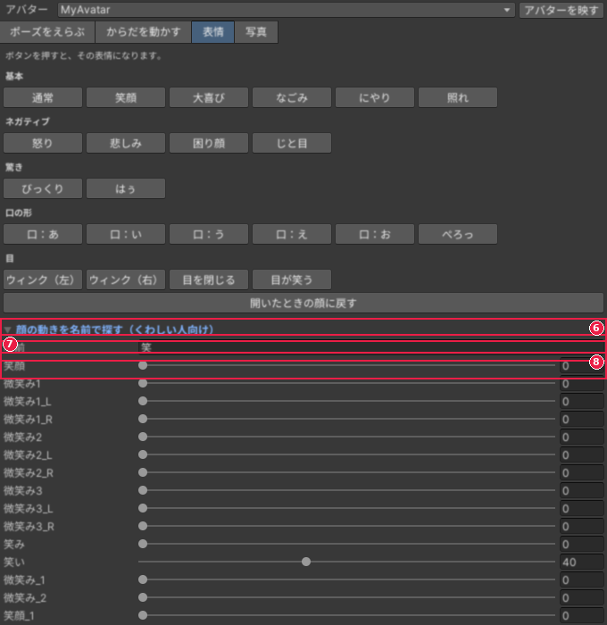
できあがり
顔の表情が変わります。戻すときは、窓の上の［↶］を押します（Ctrl+Z でも戻せます）。
顔と目を、カメラに向けたいときは、［からだを動かす］タブの［カメラを見る］を押します。
くわしく表示の［表情］タブでは、顔の動きの強さを、ひとつずつ調整して、保存できます。
気をつけること
- ボタンの表情は、名前が合う顔の動きにだけ付きます。アバターに顔の動きがないと、付きません。
- 付かないときは、「このアバターには、この表情に合う顔の動き（シェイプキー）がありませんでした。」と出ます。
- そのときは、手順 6 から 8 で、近い名前の顔の動きを探します。
- 名前で探して動かした顔の動きは、ボタンを押しても戻りません。
髪やスカート
髪やスカートの形を整えたい
髪・スカート・しっぽなどには、体の骨とは別の骨が入っているアバターがあります。 この章では、骨のつながりを「並び」と呼びます。 並びを曲げると、髪やスカートの形が変わります。
先に、窓を開いてアバターを入れておきます。やり方は「はじめての練習」にあります。
並びを探します
窓の上の［くわしく］を押します。
［揺れもの］を押します。アバターの並びが、一覧に出ます。
種類のボタン（［髪］や［スカート］）を押すと、一覧がしぼられます。
一覧から、整えたい並びをクリックします。シーンビューに、骨の点と線が出ます。
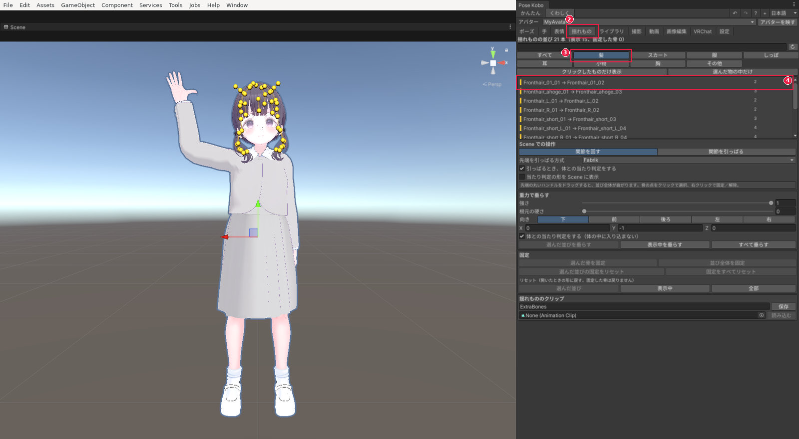
形を変えます
シーンビューで、並びの先の丸いハンドルをドラッグします。並び全体が曲がります。
1 か所だけ回したいときは、骨の点をクリックします。出てきた輪をドラッグします。
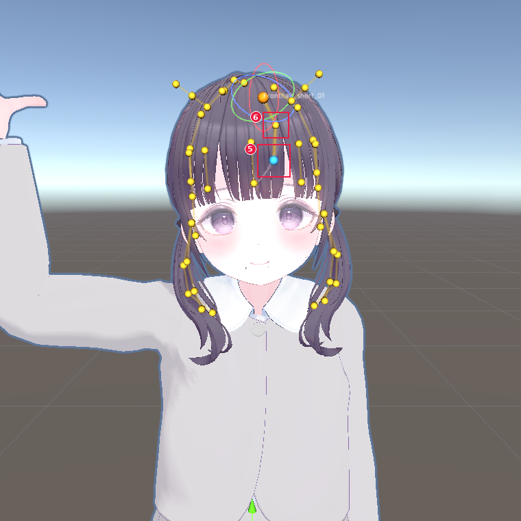
垂らしたいときは、［重力で垂らす］の［選んだ並びを垂らす］を押します。
はじめは、下へ垂れます。向きは、［向き］のボタンで変えられます。［強さ］を小さくすると、元の形に近いまま垂れます。
動かしたくない所を決めます
骨の点を右クリックします。その骨が固定され、ほかを引っぱっても動きません。
もう一度右クリックすると、固定が外れます。
元の形に戻します
［選んだ並び］を押します。開いたときの形に戻ります。
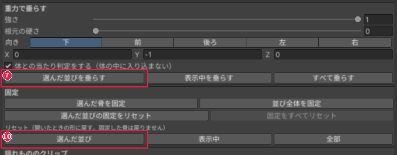
ひとつ前に戻したいときは、窓の上の［↶］を押します（Ctrl+Z でも戻せます）。
整えた形は、そのまま写真に撮れます。ポーズを保存すると、髪や服の形もいっしょに残ります。 やり方は「ポーズを保存して、あとで使いたい」と「きれいな写真を撮りたい」にあります。
気をつけること
- 止まった形だけを整えます。揺れる動きは作れません。
- 固定した骨は、リセットでは戻りません。［選んだ骨の固定を外す］を押します。
- 並びが出ないときは、そのアバターに、2 本以上つながった揺れ用の骨が見つかりません。［探し直す］を押しても出ないなら、その骨がないということです。
- VRChat SDK 3.10.5 以降が入っているときは、［PhysBoneの揺れを確認］が出ます。これは、コピーを動かして揺れを見るためのものです。元のアバターは変わりません。
ポーズの保存
ポーズを保存して、あとで使いたい
今のポーズに名前を付けて、とっておけます。 保存したポーズは「マイポーズ」と呼びます。 ポーズをえらぶ画面に、すぐ出てきます。
先に、窓を開いてアバターを入れ、ポーズを付けておきます。やり方は「はじめての練習」にあります。
名前を付けて保存します
かんたん表示での手順です。
窓の［からだを動かす］を押します。
［名前を付けて保存］の下の欄に、ポーズの名前を入れます。
［保存］を押します。「保存しました」と出ます。
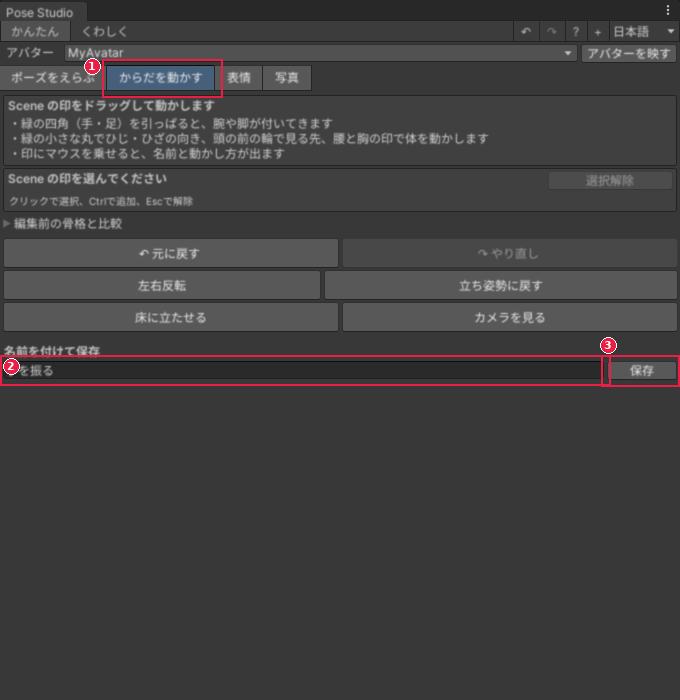
名前を入れずに押すと、日付と時刻が名前になります。
体の形・体の位置と向き・表情・髪や服の形が、ひとつにまとまって残ります。
保存したポーズを使います
窓の［ポーズをえらぶ］を押します。
一覧の上の［ポーズ］を押します。
［マイポーズ（保存したポーズ）］の絵をクリックします。アバターが、そのポーズになります。
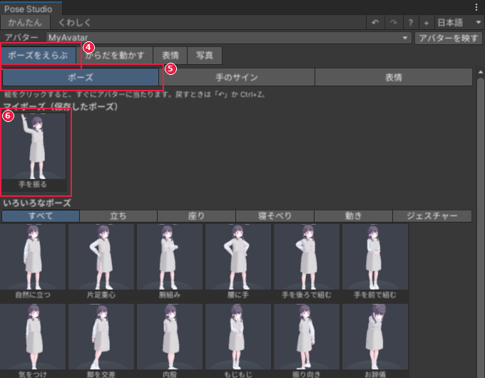
別のアバターに当てるときは、手順 4 の前に、窓の上の［アバター］の欄で、そのアバターを選びます。かんたん表示の［保存］で保存したポーズも、ほかのアバターに当てられます。
保存したポーズは、［マイポーズ（保存したポーズ）］の見出しの下に、絵で並びます。まだ無いときは、「まだありません」と出ます。
くわしく表示で保存するとき
［くわしく］では、［ポーズ］タブの［保存］の欄を使います。
［名前］に名前を入れます。
［ポーズを保存］を押します。
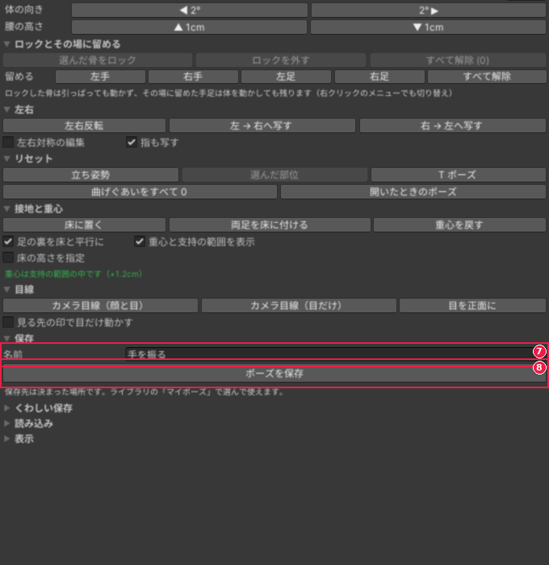
保存先のフォルダや、残す部分を選びたいときは、［くわしい保存］を開きます。保存するときは、［AnimationClip に保存］を押します。
［くわしい保存］で保存したポーズは、［マイポーズ］には出ません。 ［ライブラリ］タブで、［プロジェクト］を入れて、［フォルダ］の欄で保存したフォルダを選ぶと、絵が出ます。
保存したポーズの名前を変える・消す
［ライブラリ］タブの［マイポーズ］には、［保存］と［ポーズを保存］で保存したポーズが出ます。 絵をクリックすると、そのポーズがアバターに当たります。 そのあとに、［名前を変える］と［消す］が出ます。
［消す］は、確認の画面が出ます。消したポーズは、元に戻せません。
気をつけること
- ［保存］と［ポーズを保存］で保存したポーズは、
Assets/PoseStudio/MyPosesに、ファイルとして入ります。 - ［くわしい保存］は、はじめは
Assets/PoseStudio/Posesに入ります。 - 同じ名前で保存すると、「名前 (2)」のように番号が付いて、上書きしません。［くわしい保存］だけは、上書きするか聞かれます。
- 手だけを保存したいときは、［手］タブの［手の保存］を使います。
- VRChat のメニューでポーズを選べるようにする方法は、「VRChat の中で、ポーズを使いたい」にあります。
きれいな写真
きれいな写真を撮りたい
写真の大きさ・なめらかさ・背景は、［撮影］タブで決められます。 背景を透明にして、ほかの絵に重ねることもできます。 ふつうの撮り方は「はじめての練習」にあります。
先に、窓を開いてアバターを入れ、ポーズを付けておきます。
大きさと画質を決めます
窓の上の［くわしく］を押します。
［撮影］を押します。
［出力（大きさ・画質・保存先）］の［大きさのプリセット］で、大きさを選びます。変えなくても撮れます。
［高画質（倍率）］のスライダーを動かします。はじめは 2 です。3 や 4 にすると、ふちのギザギザが減ります。［アンチエイリアス］は、はじめのままでかまいません。
はじめは 2 です。数が大きいほど、撮るのに時間がかかります。
背景を決めます
背景を透明にするときは、［背景を透過］にチェックを入れます。写真は PNG で保存され、背景の所が透明になります。
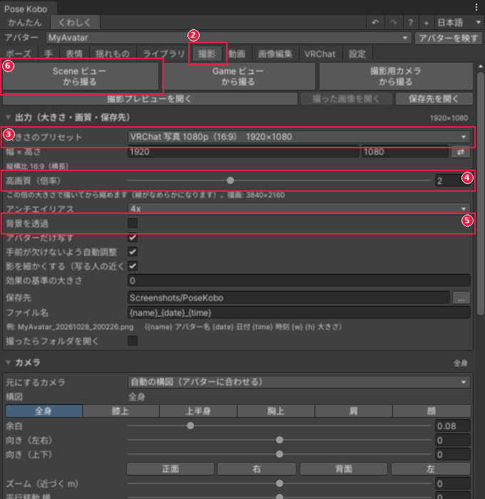
色をつけたいときは、［背景］の欄を開きます。［種類］で、［単色］や［グラデーション］を選びます。 ［背景を透過］を入れているあいだは、背景の設定は使われません。
撮ります
［Scene ビューから撮る］を押します。
撮れた写真の小さな絵が、ボタンの下に出ます。
この例は、背景を透過していない写真です。
［保存先を開く］を押すと、写真のフォルダが開きます。
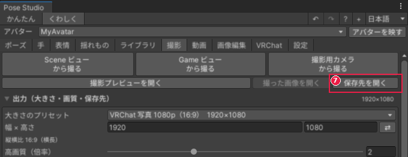
写真は、はじめは Screenshots/PoseStudio に入ります。
このフォルダは、プロジェクトのフォルダの直下にあり、Assets の外です。
Project ウィンドウには出ないので、見るときは［保存先を開く］を押します。
後ろをぼかします
本物のカメラのように、ピントの前と後ろをぼかせます。人の顔ははっきりしたまま、後ろがやわらかくなります。
［ボケ（ピントの前後をぼかす）］の見出しを押します。欄が開きます。
［ボケを付ける］にチェックを入れます。
［ボケの強さ（F 値）］のスライダーを動かします。数が小さいほど、大きくぼけます。はじめは 2 です。
［ピント］で、ピントを合わせる所を選びます。はじめは［目］です。
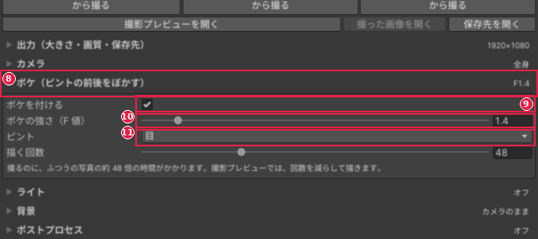
［Scene ビューから撮る］を押します。何回も描いて重ねるので、ふつうより時間がかかります。進み具合の窓で、やめることもできます。
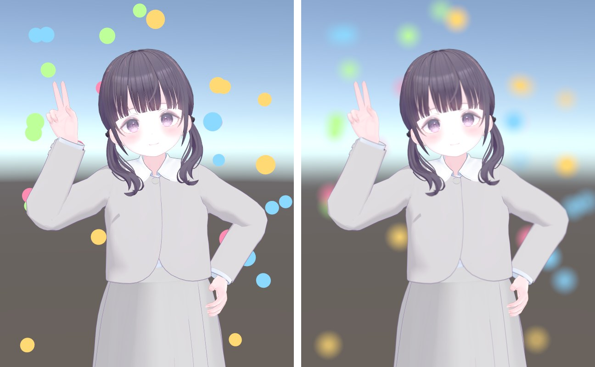
左がボケなし、右がボケありです。半透明の物や髪の先も、きれいにぼけます。［背景を透過］と一緒にも使えます。
気をつけること
- ［アバターだけ写す］が入っていると、床や小物は写りません。写したいときは、チェックを外します。
- 撮るあいだだけ、影を写る人の近くにしぼって細かくします。この設定は［影を細かくする（写る人の近く）］で、はじめから入っています。
- 広い場面では、遠くの影が写らなくなります。遠くの影も写したいときは、このチェックを外します。
- 高画質を上げすぎたり、大きな画像にしたりすると、撮るのが遅くなります。
- ［Scene ビューから撮る］が押せないときは、シーンビューが開いていません。シーンビューを開いてください。
- ボケは、［描く回数］の回数だけ描いて重ねます。大きくぼかしてざらつくときは、回数を増やします。
- ポストプロセスの被写界深度は、オフにしてください。ぼけが二重になります。
動画・GIF
動画や GIF にしたい
アバターが回る様子などを、動く画像にして残せます。 GIF は、そのままチャットや SNS に貼れる、短い動く画像です。 MP4 は、ふつうの動画のファイルです。
先に、窓を開いてアバターを入れ、ポーズを付けておきます。やり方は「はじめての練習」にあります。
動きを決めて録画します
窓の上の［くわしく］を押します。
［動画］を押します。
［かんたん録画］の中から、動きを選びます。たとえば、［ターンテーブル（アバターが回る）］を押します。
［出力（形式・保存先）］の［形式］で、GIF や MP4 などを選びます。
［● 録画する］を押します。
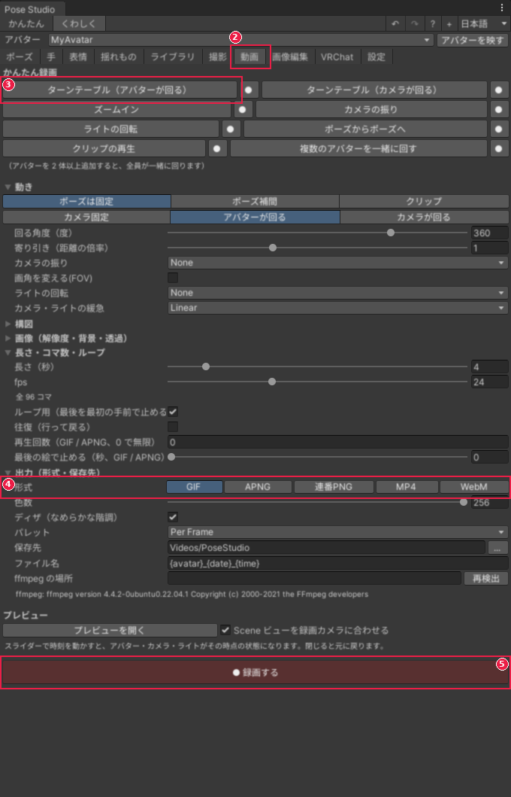
録画が終わると、［録画できました］と出ます。
［ファイルを開く］で動画が開き、［フォルダを開く］で入っているフォルダが開きます。
動画は、はじめは Videos/PoseStudio に入ります。
録画の前に動きを見ます
［プレビューを開く］を押します。
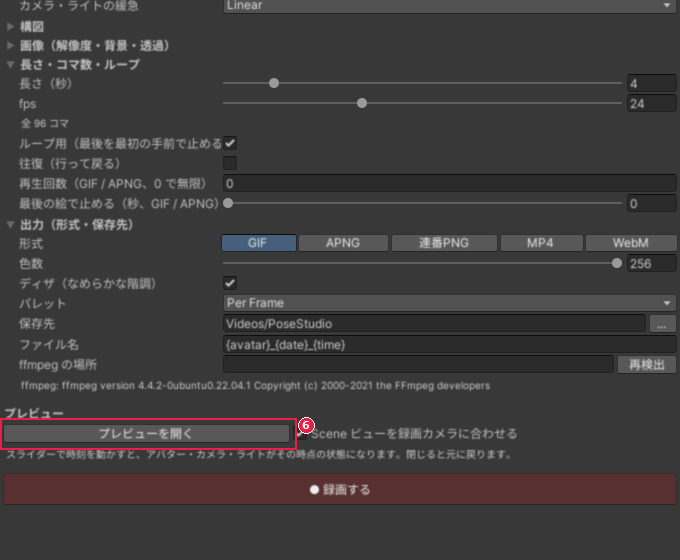
スライダーを動かすと、アバターとカメラが、その時点の状態になります。
見終わったら、［閉じる］を押します。元の状態に戻ります。
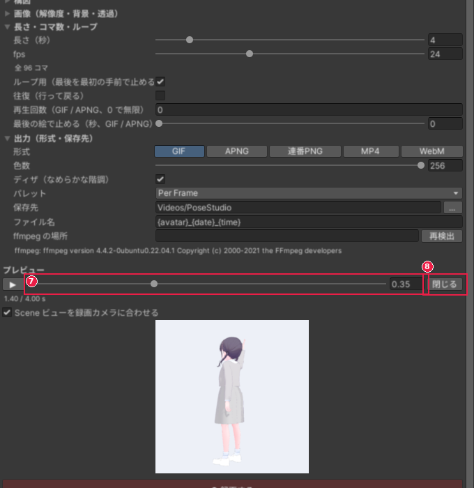
ほかの動き
- カメラが近づく動画は、［ズームイン］です。
- 2 つ以上のポーズをつなぐ動画は、［ポーズからポーズへ］です。先に、ポーズを付けて［＋ 今のポーズを追加］を 2 回以上押します。
- アニメーションクリップを動かす動画は、［クリップの再生］です。先に、［AnimationClip］の欄でクリップを選びます。
［ターンテーブル（アバターが回る）］や［ズームイン］では、長さを［長さ・コマ数・ループ］の［長さ（秒）］で変えられます。はじめは 4 秒です。
［ポーズからポーズへ］と［クリップの再生］では、長さは、ポーズの時間やクリップの長さに合わせて決まります。
気をつけること
- MP4 と WebM は、ffmpeg という別のソフトが要ります。入っていないと、この 2 つは押せません。
- ffmpeg がなくても、GIF・APNG・連番PNG は書き出せます。
- ffmpeg を入れたあとは、［出力（形式・保存先）］の［再検出］を押します。
- MP4 は、背景を透明にできません。透明にしたいときは、GIF・APNG・WebM を使います。
- 録画のあいだも、Unity は使えます。やめたいときは、［■ 中止］を押します。シーンとポーズは元に戻ります。
- GIF や APNG を長く大きくすると、メモリを多く使います。警告が出たら、大きさや長さを減らします。
VRChat で使う
VRChat の中で、ポーズを使いたい
作ったポーズを、VRChat のメニューから選べるようにします。 そのために、ポーズを切り替える仕組み（コントローラー）を作って、アバターに入れます。 VRChat SDK が入っているプロジェクトでは、使える機能が増えます。入っていなくても、コントローラーは作れます。
先に、窓を開いてアバターを入れ、ポーズを付けておきます。やり方は「はじめての練習」にあります。ポーズの保存は「ポーズを保存して、あとで使いたい」にあります。
ポーズを並べます
窓の上の［くわしく］を押します。
［VRChat］を押します。
［いまのポーズを追加］を押します。いまアバターに付いているポーズが、一覧に入ります。
ポーズを付けかえて、使いたいポーズの数だけ、くり返します。 保存したポーズは、Assets/PoseStudio/MyPoses にあります。そのファイルを選んで、［選択中から追加］を押します。
コントローラーを作ります
［ポーズ切り替えのコントローラーを作る］を押します。「○ 個のポーズで作りました」と出ます。
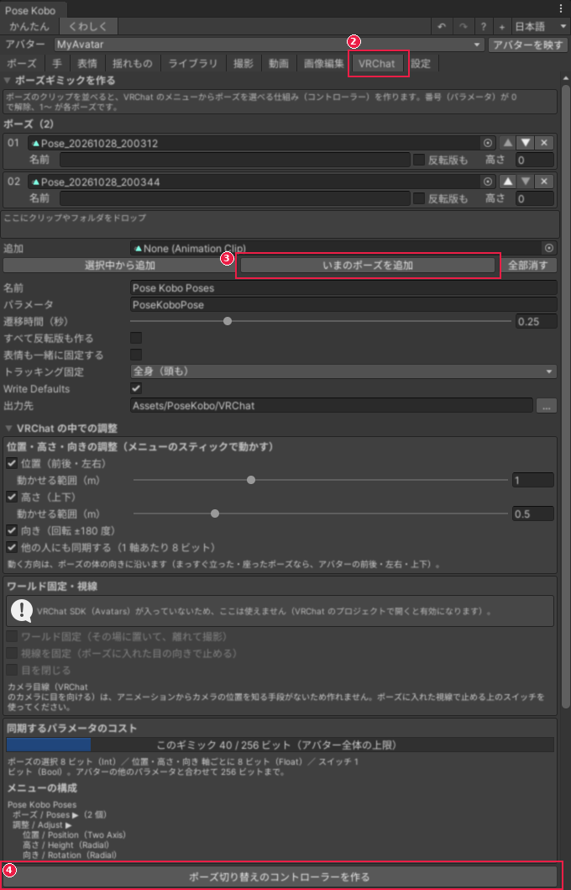
アバターに入れます
［アバターに入れる］の欄で、［アバター］に入れる先のアバターが入っているか見ます。
［方法］で、入れ方を選びます。Modular Avatar 1.8.0 以降があるときは、［Modular Avatar で入れる（おすすめ・非破壊）］がおすすめです。無いときは、［VRChat SDK で直接設定する］を選びます。
［アバターに入れる］を押します。
Modular Avatar で入れると、アバターの設定は変わりません。入れた物を消せば、元に戻ります。
メニューの形は、［メニューの構成］の欄で見られます。そのあと、いつものようにアバターをアップロードします。アップロードのしかたは、VRChat の案内を見てください。
VRChat の中では、アクションメニューの「Expressions」の中に出ます。メニューの名前は、［パラメータ］のすぐ上の［名前］の欄の名前です。はじめは Pose Studio Poses です。
もっと使いやすくする
- ［すべて反転版も作る］を入れると、左右を入れかえたポーズも作ります。
- ［表情も一緒に固定する］を入れると、ポーズの表情もそのままになります。
- ［VRChat の中での調整］では、メニューから、位置・高さ・向きを動かせるようにできます。
気をつけること
- VRChat SDK がないと、アバターには入れられません。コントローラーを作るところまでです。
- VRChat の中での動きは、まだ確かめていません。アップロードの前に、VRChat の動きを試すツールで見てください。
- ［VRChat SDK で直接設定する］で、すでに設定があるアバターに入れると、差し替えてよいか聞かれます。やめると、何も変わりません。差し替えたときの元の設定は、［出力先］のフォルダの中の Backup フォルダに残ります。
- ［Modular Avatar で入れる（おすすめ・非破壊）］では、聞かれません。前に入れたオブジェクトがあれば、それを更新します。
- アバターのルートに、VRC Avatar Descriptor が要ります。ないときは、入れられません。
- ［アバターに入れる］は、先にコントローラーを作らないと押せません。
- アバターが使える同期の数は、全部で 256 ビットです。ポーズの選択に 8 ビット使います。
- アップロードの前に、［アップロードの安全確認］の［アバターを調べる］を押すと、アバターにポーズスタジオの部品が残っていないか調べられます。
画面の説明（かんたん表示）
やりたいことから、手順の章を探せます。
かんたん表示は、はじめて開いたときの画面です。タブは 4 つだけです。
窓の上の部分
- ［かんたん］と［くわしく］: 表示を切りかえます。
- ［↶］と［↷］: 元に戻す、やり直す。Ctrl+Z と Ctrl+Y でも同じです。［画像編集］タブでは、画像編集の操作を戻します。
- ［?］: 操作ガイドを出したり、しまったりします。次に押す場所を、光る枠で見せます。
- ［+］: 窓をもう 1 つ増やします。
- 言語の欄: 画面の言葉を切りかえます。
- ［アバター］の欄: ポーズを付けるアバターを選びます。
- ［アバターを映す］: シーンビューを、アバターの全身に合わせます。
かんたん表示のタブ
- ［ポーズをえらぶ］: ポーズ・手のサイン・表情の絵を、クリックして当てます。
- ［からだを動かす］: シーンビューの緑の四角を引っぱります。［元に戻す］、［左右反転］、［床に立たせる］もあります。
- ［表情］: ボタンを押すと、その表情になります。
- ［写真］: ［大きさ］と［背景］を選び、［写真を撮る］を押します。
タブを開く
窓の上の［かんたん］を押します。
［アバター］の欄で、アバターを選びます。
［ポーズをえらぶ］を押します。
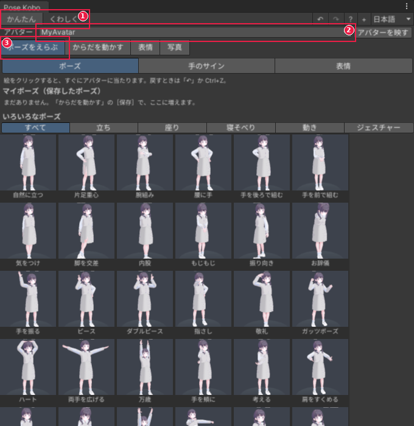
気をつけること
- アバターを入れていないと、タブの中は使えません。［写真］は、アバターがなくても開けます。
画面の説明（ポーズ・手・表情）
やりたいことから、手順の章を探せます。
この 3 つは、［くわしく］を押すと出るタブです。
［ポーズ］タブ
体を動かして、ポーズを細かく作るタブです。
- ［関節を回す］: 関節を選んで、輪で回します。
- ［手足を引っぱる］: 手足の印を引っぱると、うでや足がついてきます。
- ［体ごと引っぱる］: どの関節を引っぱっても、体がついてきます。
- ［左右対称］: 片側を動かすと、反対側も鏡のように動きます。
- ［数値で調整］: 数字とスライダーで、曲げぐあいを直します。
- ［ロックとその場に留める］: 動かしたくない骨や手足を、固定します。
- ［リセット］: 立ち姿勢や、開いたときのポーズに戻します。
- ［保存］: 今のポーズに名前を付けて残します。
［手］タブ
指の形を変えるタブです。
- ［握り］と［開き］: 5 本の指をまとめて動かします。
- ［手の保存］: 今の手の形に名前を付けて残します。
［表情］タブ
表情の元になる、顔の動き（シェイプキー）を、細かく動かすタブです。
- ［顔のメッシュ］: 表情を動かす顔を選びます。ふだんは自動です。
- 「編集中のキー」の見出し: 動かしている顔の動きの一覧です。
- ［表情のクリップ］: 今の表情を保存したり、読み込んだりします。
タブを開く
窓の上の［くわしく］を押します。
［ポーズ］を押します。
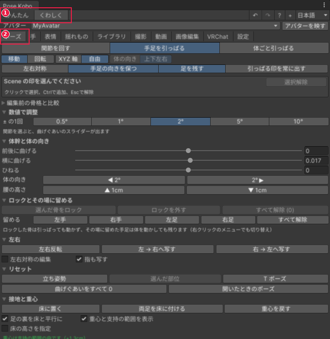
［手］と［表情］も、同じようにタブを押します。
画面の説明（揺れもの・ライブラリ）
やりたいことから、手順の章を探せます。
この 2 つは、［くわしく］を押すと出るタブです。
［揺れもの］タブ
髪やスカートなど、揺れる部分の形を整えるタブです。
- 一覧: 髪・スカート・しっぽなどの、骨のつながりが出ます。
- ［関節を回す］と［関節を引っぱる］: シーンビューでの動かし方を選びます。
- ［重力で垂らす］: 骨を、下へ自然に垂らします。
- ［固定］: 固定した骨は、ほかの操作で動きません。
- ［揺れもののクリップ］: 整えた形を保存したり、読み込んだりします。
- ［PhysBoneの揺れを確認］: VRChat SDK 3.10.5 以降があるときだけ出ます。
［ライブラリ］タブ
絵の一覧から、ポーズ・手・表情・モーションを選んで当てるタブです。
- ［ポーズ］［手］［表情］［モーション］: 一覧の種類を選びます。
- ［同梱］と［プロジェクト］: ツールに入っているものと、自分のクリップを出し分けます。
- ［マイポーズ］: 自分で保存したポーズです。
- ［反映度］: 今のポーズに、どれだけ混ぜるかです。
- ［部位］（［ポーズ］のとき）: 上半身だけ、手だけなど、当てる所を選びます。
- ［左右反転して当てる］: 左右を入れかえて当てます。
- ［2つのポーズの中間］（［ポーズ］のとき）: 2 つのポーズを、スライダーで混ぜます。
タブを開く
窓の上の［くわしく］を押します。
［ライブラリ］を押します。
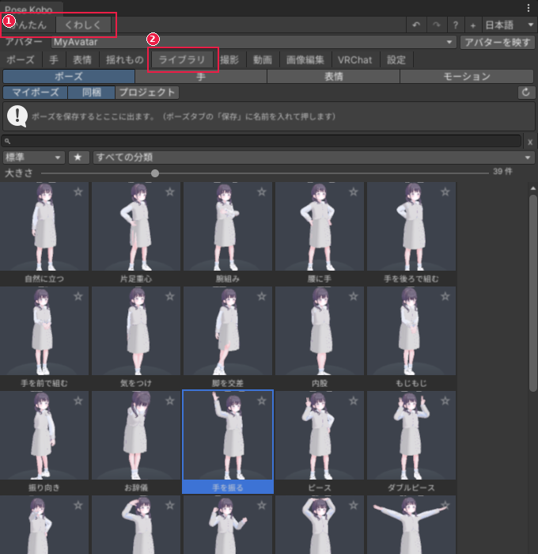
［揺れもの］も、同じようにタブを押します。
気をつけること
- ［揺れもの］は、止まった形を整えるタブです。揺れの動きは作りません。
画面の説明（撮影・動画・画像編集）
やりたいことから、手順の章を探せます。
この 3 つは、［くわしく］を押すと出るタブです。
［撮影］タブ
カメラ・ライト・背景を整えて、写真を撮るタブです。
- ［Scene ビューから撮る］: 今のシーンビューのまま撮ります。
- ［撮影用カメラから撮る］: ［カメラ］で決めた位置から撮ります。
- ［出力（大きさ・画質・保存先）］: 大きさや保存先を決めます。
- ［ボケ（ピントの前後をぼかす）］: 本物のカメラのように、ピントの前と後ろをぼかします。
- ［ライト］［背景］［追加効果］: 写真の見た目を整えます。
- ［撮影プレビューを開く］: 写る範囲を見ながら撮る窓を開きます。
撮影プレビューの窓では、［● 撮影］で撮ります。左ドラッグで回り込み、ホイールでズームします。
［動画］タブ
アバターやカメラを動かして、動画や GIF にするタブです。
- ［かんたん録画］: 動きを選んで［●］を押すと、すぐ録画します。
- ［＋ 今のポーズを追加］: ポーズを並べて、つなぐ動画を作ります。
- ［出力（形式・保存先）］: GIF や MP4 などの形式を選びます。
- ［プレビューを開く］: 録画の前に、動きを確かめます。
- ［● 録画する］: 設定どおりに録画します。
［画像編集］タブ
撮った写真に、文字や図形を足して仕上げるタブです。
- ［開く］: 画像を開きます。複数の画像を並べることもできます。
- ［切り抜き］［ペン］［四角］［文字］［ステッカー］: 道具を選んで、画像に重ねます。
- ［フィルター・色の調整］: 色や雰囲気を変えます。
- ［元の画像を見る］: 編集前の画像と見比べます。
- ［PNG 書き出し］: 仕上がりを PNG で保存します。
- ［編集を保存］: あとで続きを直せるように残します。
タブを開く
窓の上の［くわしく］を押します。
［画像編集］を押します。
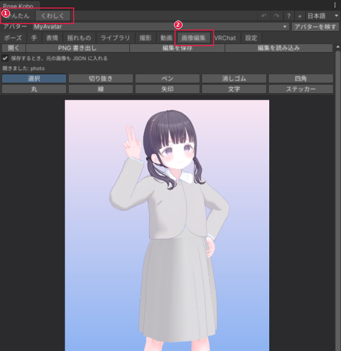
［撮影］と［動画］も、同じようにタブを押します。
気をつけること
- MP4 は、ffmpeg（動画を作る無料のソフト）が要ります。ないときは GIF を使います。
画面の説明（VRChat・設定）
やりたいことから、手順の章を探せます。
この 2 つは、［くわしく］を押すと出るタブです。
［VRChat］タブ
VRChat の中で、メニューからポーズを選べる仕掛け（ギミック）を作るタブです。
- ［ポーズギミックを作る］の欄: ポーズを並べて、［ポーズ切り替えのコントローラーを作る］で、切りかえられるようにします。
- ［アバターに入れる］: 作った仕掛けを、アバターに入れます。
- ［VRChat の中での調整］: VRChat の中で、位置・高さ・向きを動かせるようにします。
- ［共存の状態］: ポーズ作りのじゃまになるものがないか、調べます。
- ［アップロードの安全確認］: アップロードのじゃまになるものが残っていないか、調べます。
［設定］タブ
ツール全体の設定です。アバターがなくても開けます。
- ［言語］: 画面の言葉を選びます。
- ［ハンドル］の［大きさ］と［色］: 関節の丸い印の大きさと色です。手足の緑の四角の色は、［ポーズ］タブの［表示］で変えます。
- ［選択中の色］: 選んでいる印の色です。
- ［選んだアバターを自動で入れる］: ヒエラルキーで選んだアバターが、窓に入ります。
- ［入れたら全身を映す］: アバターを入れたとき、全身が見える向きにします。
- ［閉じたら元のポーズに戻す］: 窓を閉じたとき、ポーズを開く前に戻します。
タブを開く
窓の上の［くわしく］を押します。
［設定］を押します。
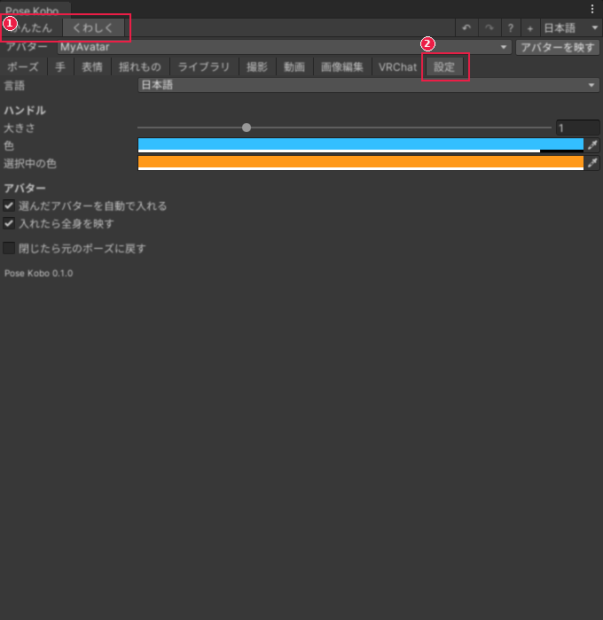
［VRChat］も、同じようにタブを押します。
気をつけること
- VRChat SDK がなくても、ポーズ作りと撮影はできます。
- ［閉じたら元のポーズに戻す］は、はじめはオフです。オフのときは、閉じてもポーズが残ります。
困ったとき
様子から探します。
メニューに［Tools > Pose Studio > Open］が出ない
- どうなっているか: Console に赤いエラーが残っていると、メニューが出ないことがあります。
- どうすればよいか: 赤いエラーを先に直します。直らないときは、入れ方をやり直します。
入れたあと、更新のあとに、赤いエラーが出る
- どうなっているか: 入れかえが、うまくいっていないかもしれません。
- どうすればよいか: プロジェクトウィンドウの「Packages」の中の「Pose Studio」を消して、入れ直します。
ハンドル（印）がシーンビューに出ない
- どうなっているか: アバターが入っていないか、タブが開いていないのかもしれません。
- どうすればよいか: ［アバター］の欄で、アバターを選びます。かんたん表示は［からだを動かす］、くわしく表示は［ポーズ］を開きます。
「人型として使えなくなった」と出る
- どうなっているか: アバターが、人型（Humanoid）の設定ではなくなっています。
- どうすればよいか: モデルをクリックし、「Rig」の「Animation Type」を「Humanoid」にします。「Apply」を押して、アバターを選び直します。
プレイモードに入ると、ポーズが戻る
- どうなっているか: プレイモードでは、アバターの動きの仕組みが、ポーズを上書きすることがあります。
- どうすればよいか: ポーズは、プレイモードに入らずに作ります。［VRChat］タブの［共存の状態］に原因が出るときは、そこにある［アバターの動きの再生を止める］などを押します。
表情のボタンを押しても、顔があまり動かない
- どうなっているか: 合うシェイプキー（顔の動き）が少ないのかもしれません。プレイモードでは、アバターを軽くするツールが、シェイプキーを消すことがあります。
- どうすればよいか: ［顔の動きを名前で探す（くわしい人向け）］で、近いものを探せます。
［動画］タブで MP4 が選べない
- どうなっているか: ffmpeg（動画を作る無料のソフト）が見つかっていません。
- どうすればよいか: ffmpeg を入れます。そのあと、［再検出］を押します。GIF は、そのまま使えます。
［写真を撮る］を押しても、写真が撮れない
- どうなっているか: 画面に、理由と直し方が出ます。
- どうすればよいか: 出た文のとおりにします。保存先は、［撮影］タブの［出力（大きさ・画質・保存先）］で変えられます。
写真やポーズが見つからない
- どうなっているか: 保存先は、決まったフォルダです。
- どうすればよいか: 写真は［保存先を開く］で開けます。ポーズは、［ライブラリ］の［マイポーズ］に出ます。［くわしい保存］の分は、Assets/PoseStudio/Poses です。
元に戻したい。Ctrl+Z が効かない
- どうなっているか: Ctrl+Z が働くのは、ポーズスタジオの窓かシーンビューを触っているときだけです。ほかの窓では、Unity の元に戻すが動きます。
- どうすればよいか: 窓の上の［↶］を押します。はじめの姿に戻すときは、［ポーズ］タブの［リセット］で［開いたときのポーズ］を押します。
窓を閉じても、アバターがポーズのまま
- どうなっているか: 閉じても、ポーズが残る設定です。
- どうすればよいか: 戻したいときは、窓の上の［くわしく］を押して、［設定］の［閉じたら元のポーズに戻す］にチェックを入れます。残したいポーズは、閉じる前に保存します。
画面の言葉が、英語や韓国語になった
- どうなっているか: 言語が切りかわりました。
- どうすればよいか: 窓の上の言語の欄（または［設定］の［言語］）で、「日本語」を選びます。
言葉の一覧
使う順に並べました。
Unity の言葉
- シーンビュー: Unity の真ん中にある、アバターを見る画面です。
- ヒエラルキー: Unity の左にある、置いてある物の一覧です。
- プロジェクトウィンドウ: Unity の下にある、ファイルの一覧です。
- Console: エラーや知らせが出る、Unity の窓です。
- インスペクター: 選んだ物の設定が出る、Unity の右の窓です。
- プレイモード: Unity でゲームを動かす状態です。
- プレハブ: アバターの元になる、ひな形のファイルです。
- AnimationClip: ポーズや動きを入れておく、Unity のファイルです。
アバターの言葉
- アバター: ポーズを付ける、人の形のモデルです。
- 人型（Humanoid）: 頭・うで・足の骨を、Unity が見分けられるアバターです。
- 骨（ボーン）: アバターの中にある、動かすための骨組みです。
- シェイプキー: 顔の形を変える仕組みです。笑顔やまばたきに使います。
- VRChat SDK: VRChat にアバターを上げるための、公式の追加機能です。
- Modular Avatar: アバターを書きかえずに、仕掛けを足せる追加の道具です。
- PhysBone: VRChat で、髪やスカートを揺らす部品です。
- ギミック: VRChat の中で動く、アバターの仕掛けです。
- メッシュ: アバターの形を作っている、面の集まりです。顔のメッシュは、顔の形の部分です。
- Rig・Animation Type: モデルのファイルを選ぶと、インスペクターに出る設定です。Animation Type を Humanoid にすると、人型になります。
- VRC Avatar Descriptor: VRChat SDK の部品です。アバターのいちばん上の物に付けます。付け方は、VRChat SDK の案内を見てください。
- アクションメニュー: VRChat の中で開く、丸いメニューです。
- コントローラー: アバターの動きを切りかえる、Unity のファイルです。
- パラメータ: VRChat のメニューで選んだ番号や値を、アバターに伝える入れ物です。
ポーズスタジオの言葉
- 印（ハンドル）: シーンビューに出る、引っぱるための四角や丸です。
- マネキン: 練習用の、人の形の人形です。
- ポーズ: 止まった姿の形です。
- IK: 手や足を引っぱると、うでや足がついてくる動かし方です。
- FK: 関節を 1 つずつ回す動かし方です。
- ロック: 引っぱっても、その骨を動かさないことです。
- その場に留める: 体を動かしても、手や足の場所を変えないことです。
- 左右反転: ポーズを鏡に映したように、左右を入れかえることです。
- ライブラリ: ポーズ・手・表情・モーションの、絵の一覧です。
- マイポーズ: 自分で保存したポーズです。
- モーション: 動きのあるクリップです。
- 透過: 背景を透明にすることです。
- ボケ・ピント: ピントは、写真のくっきりした所です。ボケは、その前と後ろがやわらかくなることです。
- F 値: ボケの強さを表す数です。小さいほど大きくぼけます。
- GIF: 動く画像のファイルです。
- ffmpeg: 動画を作る無料のソフトです。MP4 と WebM に使います。
プログラムから使う
画面でする直しの多くは、C# のスクリプトからも呼べます。
プログラムを書かない人は、この章を飛ばしてかまいません。
C# から使う
次の例は、マネキンを出して、指を曲げて、写真を撮ります。
ファイルは、Assets の中の Editor フォルダに置きます。
using GP14;
using UnityEditor;
using UnityEngine;
// 自分のアセンブリ定義（asmdef）を使うときは、GP14.PoseStudio.Editor を参照に足します
public static class PoseSample
{
[MenuItem("Tools/Pose Sample/Take Photo")]
static void TakePhoto()
{
using (var api = new PoseStudioApi())
{
// 練習用のマネキンを出して、ポーズを付ける相手にします
api.Studio.CreateMannequin();
var session = api.Studio.Session;
// 両手の指を、半分だけ曲げます
session.SetFingerCurl(true, FingerMask.All, 0.5f);
session.SetFingerCurl(false, FingerMask.All, 0.5f);
// 足を床に付けます
session.PlaceOnGround();
// 写真の大きさと保存先を決めて、撮ります
var settings = api.Studio.Capture.Settings;
settings.Width = 1024;
settings.Height = 1024;
settings.OutputFolder = "Screenshots/PoseStudio";
var photo = api.Studio.TakePhoto("camera");
Debug.Log("保存しました: " + photo.Path);
}
}
}Unity の上のメニューの「Tools」に、「Pose Sample」が増えます。そこから「Take Photo」を選びます。
| 呼び出し | 中身 | 引数（既定値） |
|---|---|---|
api.Studio.CreateMannequin() | マネキンを出して、編集の対象にします。 | なし |
api.Studio.SelectAvatar(avatar) | シーンの人型のアバターを、編集の対象にします。 | avatar: 人型の Animator |
api.Studio.Session.SetFingerCurl(left, fingers, curl, weight) | 指を曲げます。 | weight（1） |
api.Studio.Session.PlaceOnGround() | 足を床に付けます。 | なし |
api.Studio.TakePhoto(kind, save) | 写真を撮ります。 | kind（"camera": 撮影用カメラ。"scene": シーンビューなど）、save（true） |
HTTP から使う
外のプログラムからも、同じことができます。
Unity のメニューから、［Tools > Pose Studio > Automation > Start HTTP API］を選びます。
始めると、プロジェクトの Library/GP14Api/connection.json に、つなぐ先の URL と、合言葉（トークン）が書かれます。トークンは、人に見せないでください。
依頼は、JSON を POST /v1/commands に送ります。Authorization: Bearer トークン を付けます。返ってきた requestId で、GET /v1/commands/requestId から結果を受け取ります。
POST /v1/commands
{"Operation":"types"}つながるのは、同じパソコンの中だけです。止めるときは、［Tools > Pose Studio > Automation > Stop HTTP API］を選びます。
プレイモードに入ったときと、スクリプトが読み込み直されたときにも、自動で止まります。
気をつけること
- Unity のエディタの中だけで動きます。
- Unity のメインスレッドから呼びます。